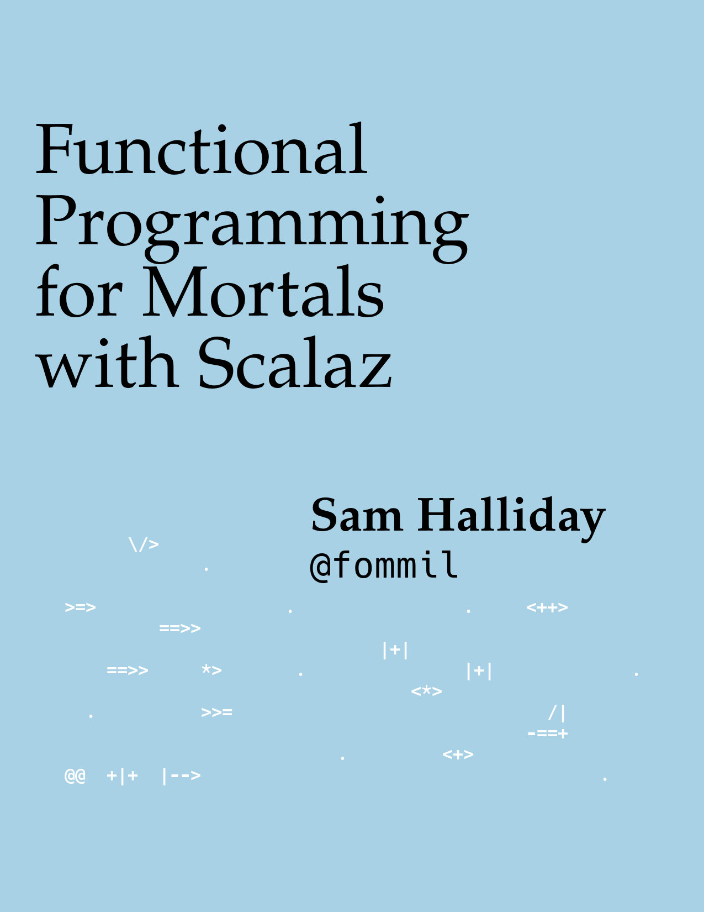
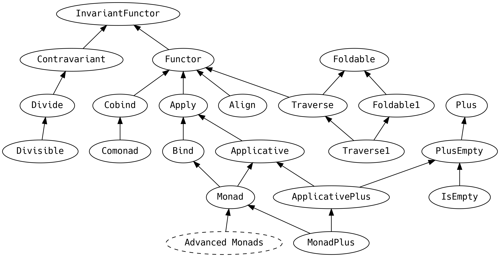
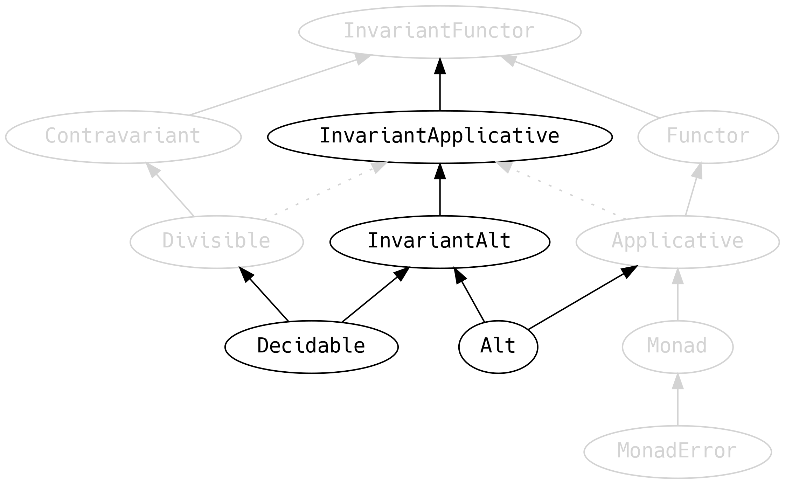

Divide, conquer, choose, ap and alt… et Empera
Sam Halliday
EdLambda 2018
Introduction
Who knows?
- Java / C#
- Scala / F# / OCaml
- Haskell / Eta / Purescript
#fpmortals

Why Scala?
- I'm so sorry
- Please do not use Scala
- We need typeclasses of typeclasses
- one day, a Haskell port…
Scala
Dependencies
scalaVersion in ThisBuild := "2.12.7"
scalacOptions in ThisBuild += "-Ypartial-unification"
libraryDependencies += "org.scalaz" %% "scalaz-core" % "7.2.27"Typeclasses
import simulacrum._
@typeclass trait Ordering[T] {
def compare(x: T, y: T): Int
@op("<") def lt(x: T, y: T): Boolean = ...
@op(">") def gt(x: T, y: T): Boolean = ...
}
@typeclass trait Numeric[T] extends Ordering[T] {
@op("+") def plus(x: T, y: T): T
@op("*") def times(x: T, y: T): T
@op("unary_-") def negate(x: T): T
...
}ADTs
case class— productssealed trait— coproductsobject,Int,String(etc) — values
sealed trait Geometry
case class Point(coordinates: (Double, Double)) extends Geometry
case class MultiPoint(coordinates: List[(Double, Double)]) extends Geometry
case class LineString(coordinates: List[(Double, Double)]) extends Geometry
case class MultiLineString(coordinates: List[List[(Double, Double)]]) extends Geometry
case class Polygon(coordinates: List[List[(Double, Double)]]) extends Geometry
case class MultiPolygon(coordinates: List[List[List[(Double, Double)]]]) extends Geometry
case class GeometryCollection(geometries: List[Geometry]) extends Geometry
sealed trait GeoJSON
case class Feature(properties: Map[String, String], geometry: Geometry) extends GeoJSON
case class FeatureCollection(features: List[GeoJSON]) extends GeoJSONInstances
implicit val NumericDouble: Numeric[Double] =
new Numeric[Double] {
def plus(x: Double, y: Double): Double = x + y
def times(x: Double, y: Double): Double = x * y
def negate(x: Double): Double = -x
def zero: Double = 0.0
def compare(x: Double, y: Double): Int = Double.compare(x, y)
// optimised
override def lt(x: Double, y: Double): Boolean = x < y
override def gt(x: Double, y: Double): Boolean = x > y
override def abs(x: Double): Double = Math.abs(x)
}object ComplexDouble {
implicit val numeric: Numeric[ComplexDouble] =
new Numeric[ComplexDouble] {
def plus(x: ComplexDouble, y: ComplexDouble): ComplexDouble = ...
def times(x: ComplexDouble, y: ComplexDouble): ComplexDouble = ...
def negate(x: ComplexDouble): ComplexDouble = ...
def zero: ComplexDouble = ...
def compare(x: ComplexDouble, y: ComplexDouble): Int = ...
}Typeclass Derivation
implicit def numericComplex[T: Numeric]: Numeric[Complex[T]] =
new Numeric[Complex[T]] {
def plus(x: Complex[T], y: Complex[T]): Complex[T] = ...
def times(x: Complex[T], y: Complex[T]): Complex[T] = ...
def negate(x: Complex[T]): Complex[T] = ...
def zero: Complex[T] = ...
def compare(x: Complex[T], y: Complex[T]): Int = ...
}Real World™ Scala
- Typeclasses are not idiomatic
- Idiomatic:
- mixing classes and data
- legacy Java APIs
- mutation
- runtime casting
null… exceptions everywhere
- Do not use Scala
Scalaz


Typeclass Derivation
scalaz-deriving

Not in Haskell
… Extension?
The Good Bit
implicit val monad = new MonadError[Default, String] {
def point[A](a: =>A): Default[A] =
instance(a.right)
def bind[A, B](fa: Default[A])(f: A => Default[B]): Default[B] =
instance((fa >>= f).default)
def handleError[A](fa: Default[A])(f: String => Default[A]): Default[A] =
instance(fa.default.handleError(e => f(e).default))
def raiseError[A](e: String): Default[A] =
instance(e.left)
}| Typeclass | method | given | signature | returns |
|---|---|---|---|---|
Applicative |
apply2 |
F[A1], F[A2] |
(A1, A2) => Z |
F[Z] |
Alt |
altly2 |
F[A1], F[A2] |
(A1 \/ A2) => Z |
F[Z] |
Divisible |
divide2 |
F[A1], F[A2] |
Z => (A1, A2) |
F[Z] |
Decidable |
choose2 |
F[A1], F[A2] |
Z => (A1 \/ A2) |
F[Z] |
implicit val decidable = new Decidable[Equal] {
...
def choose2[Z, A1, A2](a1: =>Equal[A1], a2: =>Equal[A2])(
f: Z => A1 \/ A2
): Equal[Z] = new Equal[Z] {
def equal(z1: Z, z2: Z): Boolean =
(f(z1), f(z2)) match {
case (-\/(s), -\/(t)) => a1.equal(s, t)
case (\/-(s), \/-(t)) => a2.equal(s, t)
case _ => false
}
}
}object Vader {
private val g: Vader => (String, Int) = d => (d.s, d.i)
implicit val equal: Equal[Vader] =
Divisible[Equal].divide2(Equal[String], Equal[Int])(g)
}object Darth {
...
private def f(e: Vader \/ JarJar): Darth = e.merge
implicit val default: Default[Darth] =
Alt[Default].altly2(Default[Vader], Default[JarJar])(f)
}